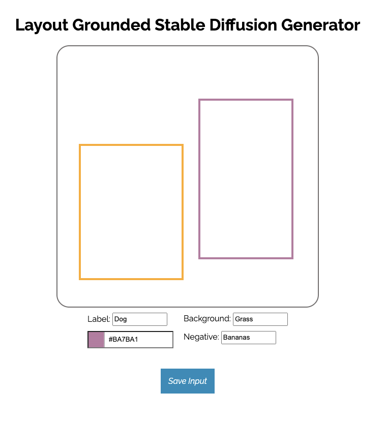

Canvas

For our product, we utilize a canvas interface to introduce a creative artistic canvas for the user
to freely define a framework for their desired image. Through this canvas, you can draw bounding boxes
at desired locations and label the object whatever you want (e.g. a cat on the left).
Moreover, you can define the desired background of this photo (e.g. on grass).
Lastly, you can also define the negative prompt - whatever you wish to not appear in the image.
After pressing the Save Input button, this canvas will generate a .json file.
This file can later be used to pass into the model.
Unfortunately, given our time and technical constraints, we weren't able to host the canvas interface along with the model on one server. This is a future development!